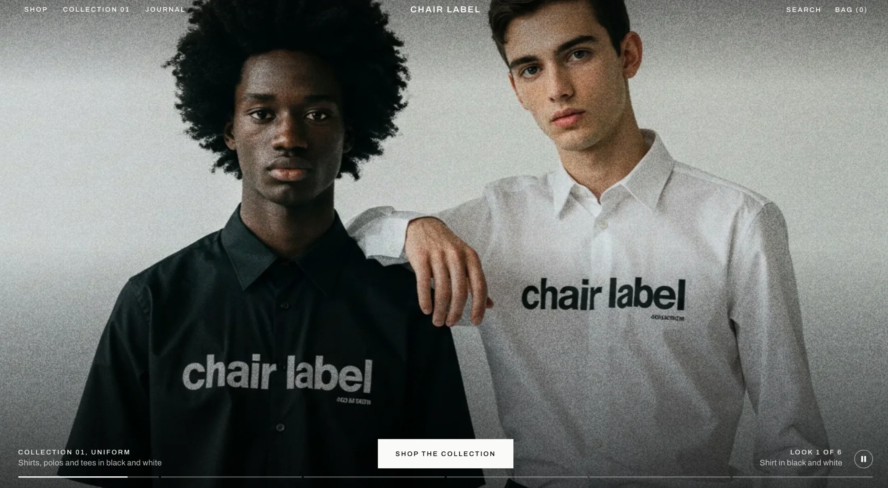

Interiorem
A storefront for furniture with a previous life — mid-century teak, Italian glass and Anatolian wool, listed by Melbourne dealers and collectors.

 Start a project
Start a project

Design & E-commerce Studio
We design and build narrative-driven storefronts for brands with something to say — and something to sell.
02
A storefront for furniture with a previous life — mid-century teak, Italian glass and Anatolian wool, listed by Melbourne dealers and collectors.
Collection 01, launched as a campaign you can shop — the lookbook and the store are the same page.


Built from the brand outwards.
Start a projectMost storefronts are assembled from the same fifty themes. Yours shouldn’t be. We art-direct commerce like an editorial — every scroll a *spread*, every product a *story* — then engineer it to load fast, convert hard and scale without apology.
03
01Art direction02Interactive storytelling03Commerce engineering